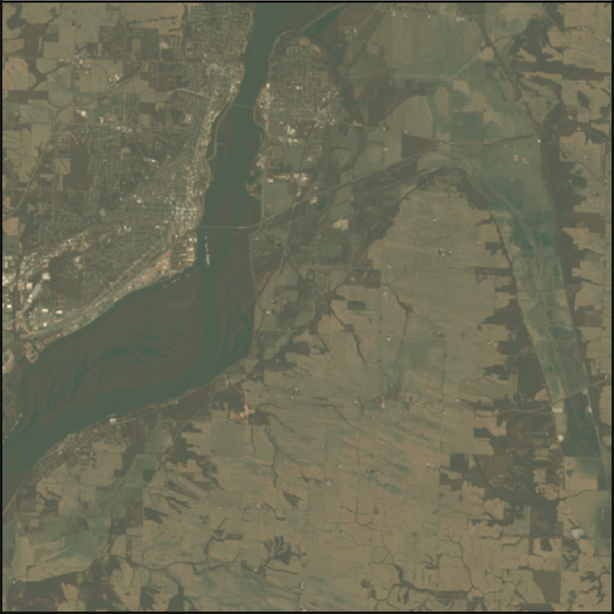

Cropland
replicating the USDA Cropland Data Layer
USDA Cropland Data Layer
- landcover classification and estimation
- produced after the calendar year
- uses satellite data from:
- 5 satellites
- yearly aggricultural statistics
objective:
to replicate the USDA Cropland Data Layer with the KMeans clustering algoritm
full area, 2 June 2017

look closer
at more colors
later in the year
Processing
- aligned all satellite images
- removed clouds and other obstructions
- pooled to 1 acre resolution
- reduced dimensionality with pca
- found 21 clusters with kmeans
Clusters
KMeans
USDA
Cluster similarity
Recolored clusters
KMeans
USDA
full scale
KMeans
USDA

Thank you
claymager
john-mager